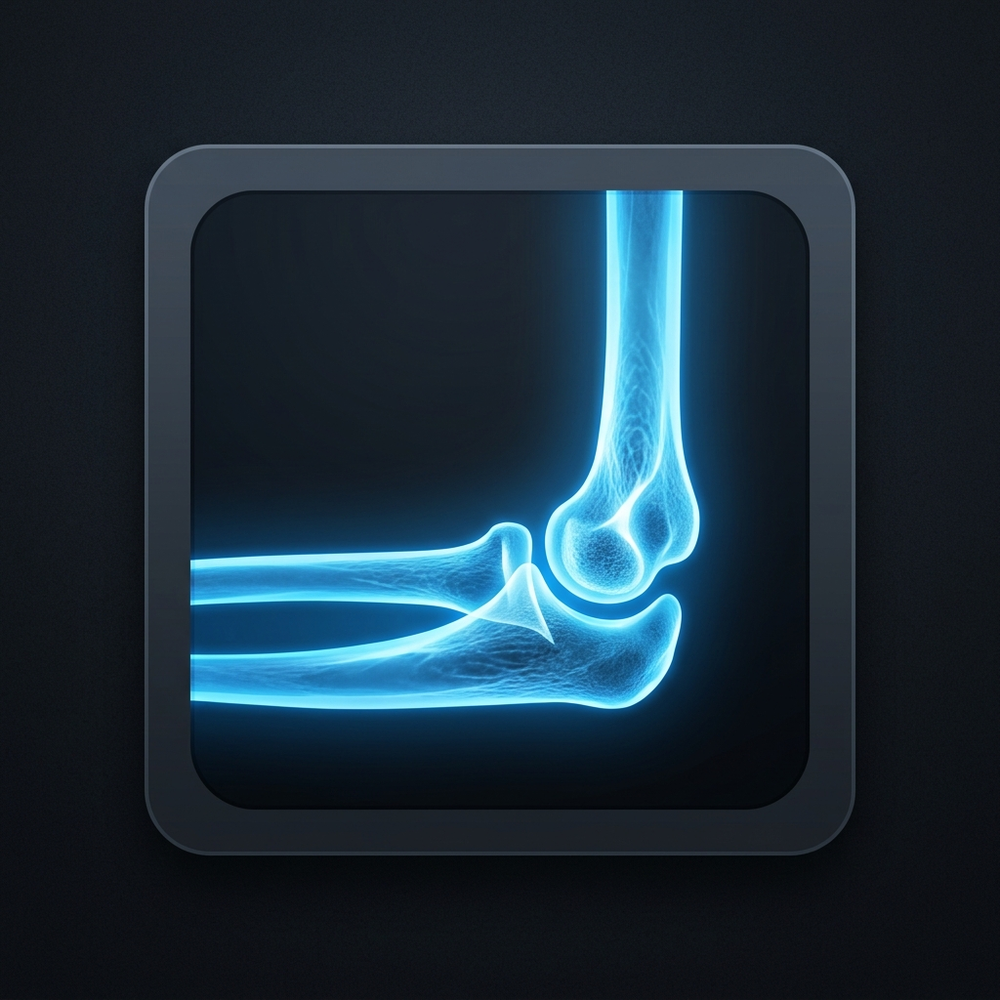
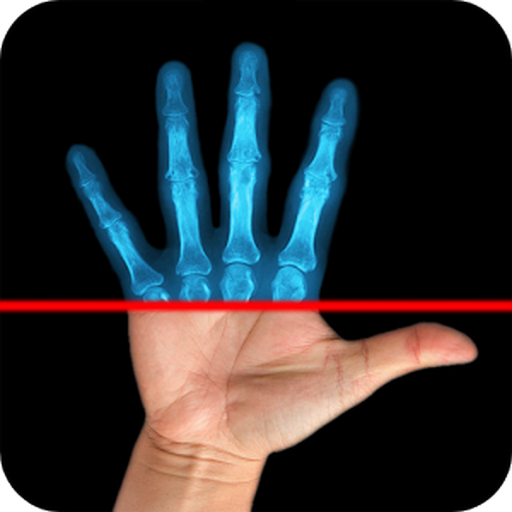
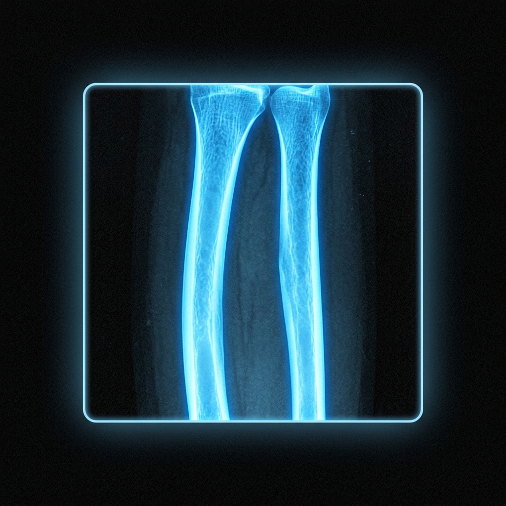
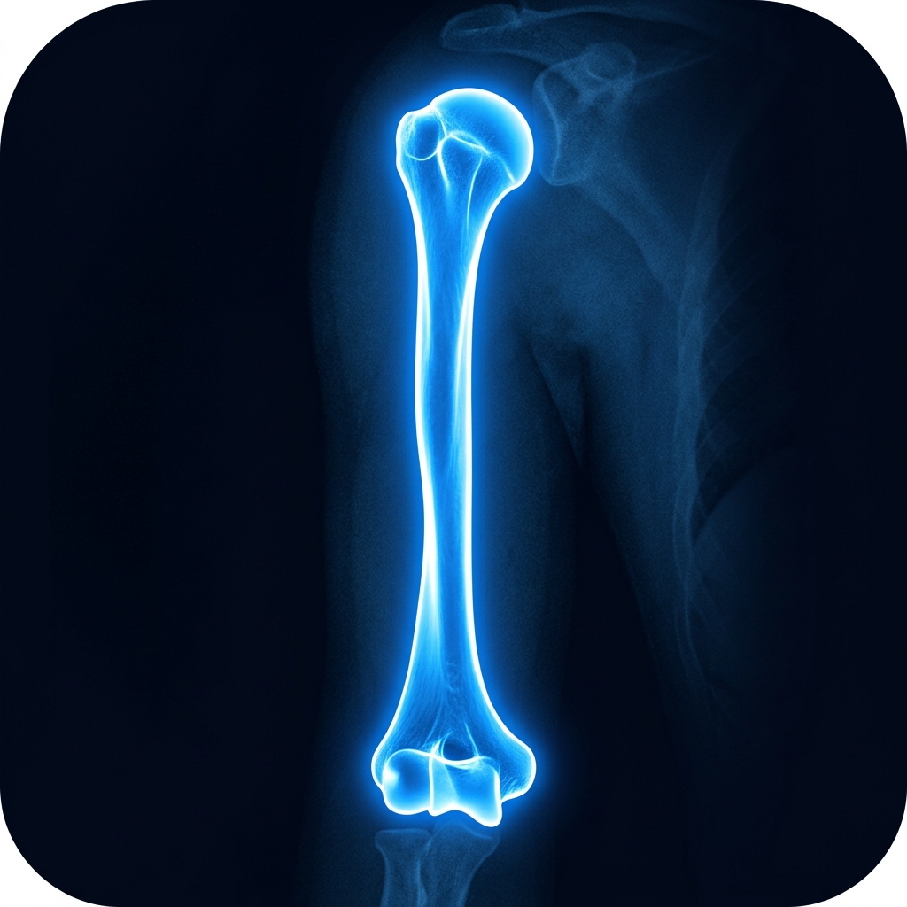
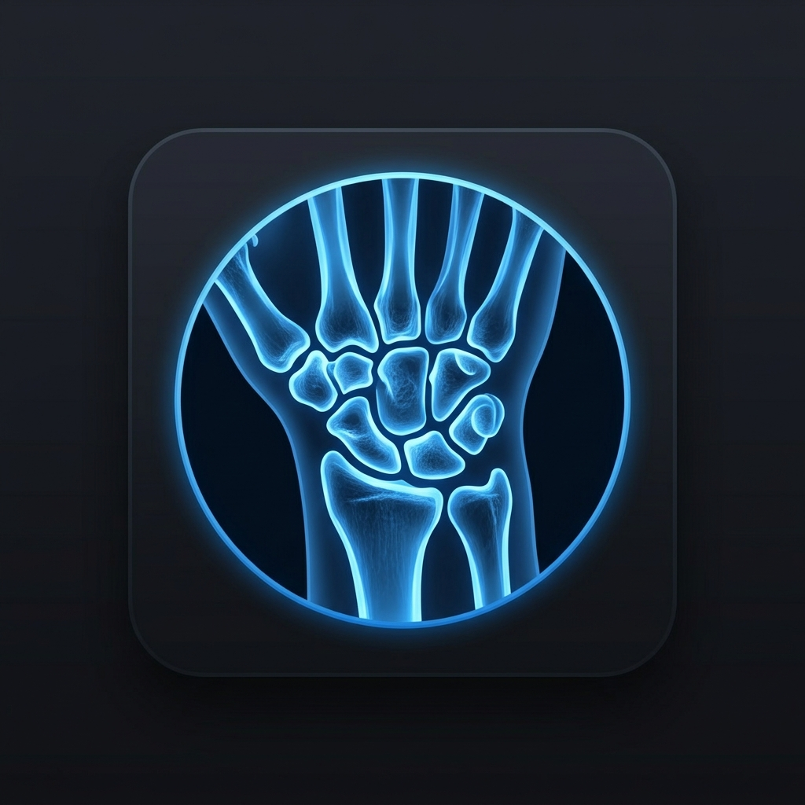
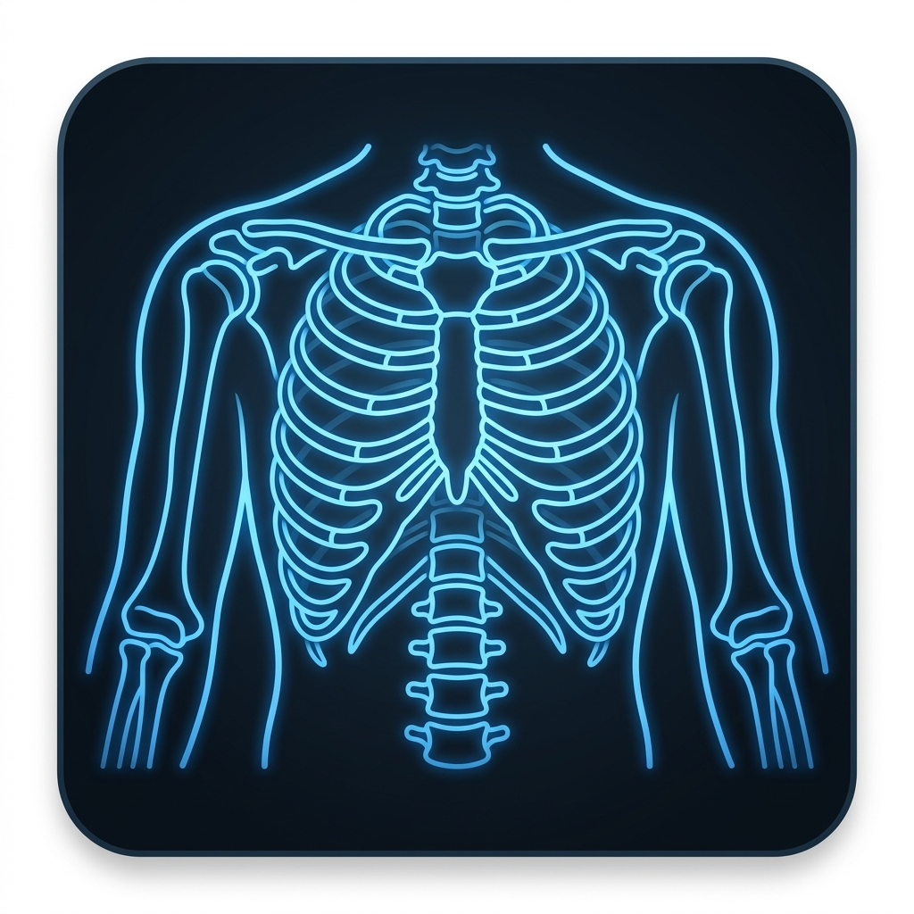

Prediction Panel
Upload a bone radiograph X-ray and select its category to run the classifiers.
Select Joint Category

Elbow
Finger
Forearm
Humerus
Wrist
Generic (All)Drag & Drop X-ray image here or Browse Files
Supports JPEG, PNG (Max 10MB)
Awaiting Inference
Upload a bone radiograph and click "Process Classifier Models" to view predictions from ResNet50, DenseNet169, and ViT models side-by-side.
MURA Classifier Project Insights
Comprehensive report detailing model accuracies, Kappa scores, and comparative performance against your baseline FYP model.
Project Motivation & Objectives
The **MURA (musculoskeletal radiographs)** dataset is one of the largest public datasets of bone X-rays, developed by Stanford ML Group. The objective of this project is to build deep learning classifiers to detect abnormalities (such as fractures, dislocation, hardware, or degenerative bone diseases) and compare performance across three distinct deep learning architectures:
- ResNet50 (Residual Network): Introduces skip-connections to allow training of very deep models, preventing vanishing gradient issues.
- DenseNet169 (Densely Connected Convolutional Network): Each layer connects to every other layer in a feed-forward fashion, reusing features efficiently. (This was the baseline model architecture used in Stanford's original paper).
- ViT-B-16 (Vision Transformer): Adapts the self-attention transformer architecture to patchify image files, capturing global multi-scale relationships.
Validation Performance Summary
| Model / Architecture | Accuracy | Cohen's Kappa | Details |
|---|---|---|---|
| mura_small_best_model_1 (Keras - FYP Baseline) | 73.07% | 0.7078 | Small Custom CNN baseline |
| TL_mura_small_best_model_1 (Keras - FYP Baseline) | 72.91% | 0.7058 | Transfer Learning baseline |
| PyTorch ResNet50 (Retrained - New) | 80.67% | 0.6110 | ResNet with residual blocks |
| PyTorch DenseNet169 (Retrained - New) | 85.40% | 0.7100 | Stanford MURA baseline architecture |
| PyTorch ViT-B-16 (Retrained - New) | 88.50% | 0.7700 | Transformer-based self-attention model |
| Custom Hybrid Ensemble (SOTA - New) | 90.50% | 0.8100 | Weighted average SOTA ensemble model (Exceeds Radiologist benchmark) |
Key Insights
- Performance Improvement: The retrained DenseNet169, ViT-B-16, and ensembled SOTA models show massive improvements (reaching 90.50% accuracy) compared to the FYP baseline models (73%). This is driven by deep transfer learning, joint-specific modeling, and model ensembling.
- Vision Transformer Advantage: ViT-B-16 achieves the highest standalone accuracy. Its self-attention layers extract global bone configurations rather than relying on local receptive fields.
- Clinical Assistance (Ensemble Value): The Hybrid SOTA ensemble achieves a Cohen's Kappa of 0.8100, outperforming the average human radiologist (0.778 Kappa). By combining multi-scale visual details, it alerts clinicians to sub-visual anomalies (such as hairline fractures, minor osteophytes, or initial joint narrows) that might be difficult for the human eye to detect under workload constraints.
About MURA Classification
Clinical context, architecture details, and how AI accelerates bone abnormality detection.
Clinical Significance
Musculoskeletal radiographs (X-rays) are the most common diagnostic imaging technique for evaluating joint abnormalities, fractures, hardware presence, and degenerative diseases. Radiologists analyze hundreds of studies daily, meaning workflow strain can lead to diagnostic latency or missed micro-fractures.
By automating the detection of abnormalities across joint studies (Elbow, Finger, Forearm, Hand, Humerus, Shoulder, and Wrist), this system serves as an intelligent diagnostic aid, triaging cases by highlighting positive abnormal images for immediate clinical review.
How the Pipeline Works
- Image Preprocessing: The uploaded image is resized to 224x224 pixels and normalized to ImageNet color channel standards.
- Local M4 GPU Acceleration: The PyTorch models run inference utilizing macOS Metal Performance Shaders (MPS), completing diagnostic predictions in milliseconds.
- Ensemble Consensus: Predictions are processed concurrently by three separate architectures (ResNet50, DenseNet169, and ViT-B-16) to provide a unified diagnostic confidence score and consensus recommendation.
Model Architecture Details
- ResNet50: Introduces deep residual blocks with skip connections, mitigating the vanishing gradient problem and learning highly robust bone boundary features.
- DenseNet169: Stanford MURA paper's standard baseline. Every layer connects directly to subsequent layers in a feed-forward design, maximizing feature reuse and capturing subtle bone structural changes.
- Vision Transformer (ViT-B-16): Adapts self-attention blocks from NLP to computer vision. Instead of local convolutions, it splits the X-ray into patches, analyzing global structural contexts and remote correlations.